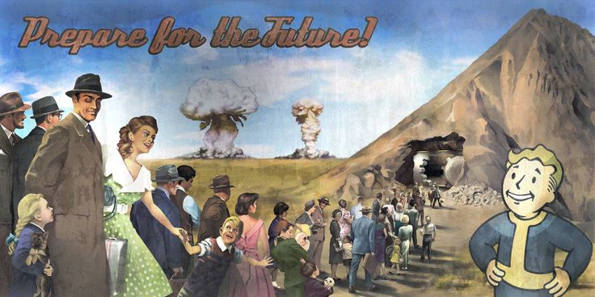

BEM-VINDO A VAULT-TEC
VAULT-TEC é ume empresa especializada para que você e sua fámila não sofram as consequências da guerra nuclear eminente, nós temos uma solução: abrigos nucleares subterrâneos para você e sua fámila. Ligue agora e agende a sua casa embaixo de casa!

Vaults são a opção mais segura contra radiação, as paredes de chumbo reforçadas impedem que ela penetre
Você e seus companheiros terão comida e água limpa diferente do resto do mundo!
Não se preocupe com a roupa, você usará macacões especializados em deixar você confortavel, lindo e sem radiação!
Um depoimento de um comprador que teve sua visita antecipada
"É incrivel, seguro, limpo e tão organixado, o ar das ventilações lembra o ar de Minnesota, a luz UV lembra um dia quente de verão é simplesmente perfeito."